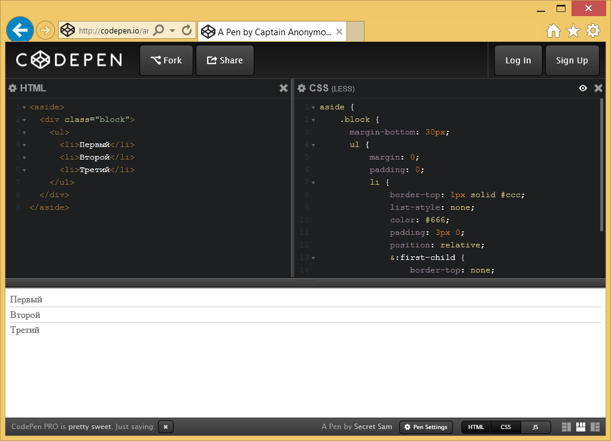

LESS
Учебник LESSПлатформа Codepen
Codepen — это популярная онлайновая платформа для редактирования и хранения кода на HTML, CSS и JavaScript с просмотром готового результата в браузере.
Полученным кодом можно делиться и видоизменять его при необходимости.
Окно браузера делится на несколько рабочих областей, в которых отображается результат, а также код на HTML и CSS.
Codepen не требует регистрации, но это рекомендуется сделать, если вам часто приходится пользоваться данной платформой.
Это добавляет возможность управлять набором разного кода и возвращаться к его редактированию.
Начать с чистого листа можно по этой ссылке:
http://codepen.io/pen
Или перейти к готовому коду по заранее известной ссылке, вроде этой:
http://codepen.io/anon/pen/BybpEg
В соответствующей рабочей области пишется код HTML и CSS, при этом служебные элементы вроде <head>, <body> и тому подобное добавлять не нужно.
Сам результат написанного кода выводится в отдельной рабочей области, она обновляется автоматически при наборе кода.
Поскольку нас интересует не сам CSS, то для начала надо щёлкнуть по шестерёнке возле заголовка и в открывшемся списке задать Less.
Тип выбранного препроцессора подсвечивается зелёным цветом и отображается в заголовке рабочей области.

Кроме того, там же можно указать следующие настройки.
Normalize — стилевая библиотека для приведения некоторых стилевых свойств к единому значению и обнуления других свойств.
Иногда бывает необходима для получения одинакового результата в разных браузерах с учётом современных стандартов.
Reset — стилевая библиотека от Эрика Мейера, преследует ту же цель что и Normalize.
-prefix-free — небольшой скрипт, который автоматически добавляет необходимые вендорные префиксы (вроде -webkit и -moz) к стилевым свойствам.
Autoprefixer — альтернативный скрипт добавляющий префиксы к свойствам, это позволяет писать чистый современный код CSS не задумываясь о поддержке в браузерах.
External CSS File or Another Pen — подключение внешнего стилевого файла; актуально при использовании сторонних библиотек вроде Bootstrap.
Переключение между Less и готовым CSS делается при щелчке по иконке глаза, показанной на рисунке ниже.
Итоговый CSS править нельзя, но допустимо выделить его и скопировать.